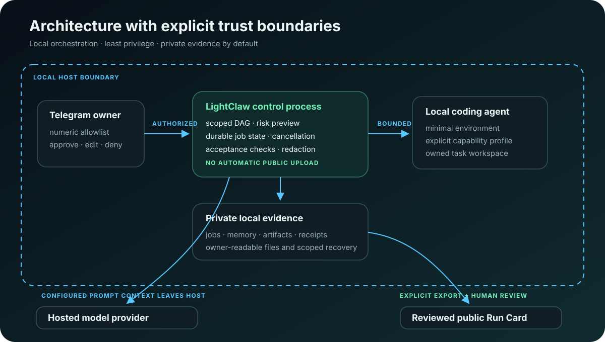

Owner access
An empty Telegram allowlist blocks startup. Public mode requires a separate explicit acknowledgement.
01 Telegram mission control for local coding agents
LightClaw turns a phone request into a scoped DAG, bounded local work, real checks, a reviewable patch, a private receipt, and a deliberate undo path.
Alpha software with host access. No Telegram or provider token is needed for the deterministic demo.
“Add a health check, test it, and return only verified work.”
02 The control loop
LightClaw stays narrow: one owner, one visible plan, explicit capability, local execution, observable checks, and evidence you can inspect after the chat scrolls away.
Send a text or voice goal from Telegram, or start locally from the terminal.
owner → goal
See paths, risk, capability profile, worker ownership, dependencies, and expected output.
goal → DAG
Approve, edit, or deny before workers touch the dedicated task workspace.
human gate
Acceptance checks decide whether work is accepted, repaired within bounds, or rejected.
tests → status
Keep the patch, artifacts, file hashes, receipt, cost/time evidence, and scoped recovery path.
proof → choice
03 Replayable proof
PHONE REQUEST → VERIFIED PATCH
The fixture creates a disposable Git-backed service, adds a health check, runs unittest, and records the request, approval, test output, and patch.
lightclaw demo --scenario repo-task --json
04 Explicit boundaries
“Self-hosted” does not make Telegram, hosted providers, or external coding-agent CLIs local. LightClaw names those boundaries and fails closed where it can.
An empty Telegram allowlist blocks startup. Public mode requires a separate explicit acknowledgement.
Delegated workers do not inherit provider or Telegram secrets and run inside an owned task workspace.
Trusted host commands widen the boundary and require a separate confirmation. They are not called sandboxed.

05 Five-minute proof
Clone, isolate, install, and run the deterministic repository story. It uses no Telegram account, provider credential, or paid model call.
Read the annotated quickstart →git clone https://github.com/OthmaneBlial/lightclaw.git
cd lightclaw
python3 -m venv .venv
. .venv/bin/activate
python -m pip install -e .
lightclaw demo --scenario repo-task --jsonThe stable release is intentionally blocked until real external self-hosters test a fresh install. Failures and missing timings count as useful evidence.
Submit a bounded alpha report